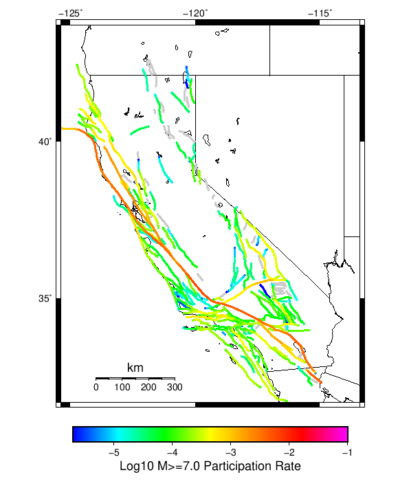

Start 2012, 500 yr, Spontaneous, Historical Catalog Results
| Start 2012, 500 yr, Spontaneous, Historical Catalog |
|---|
| Num Simulations | 180 (incomplete) |
| Start Time | 2012/01/01 00:00:00 UTC |
| Start Time Epoch Milliseconds | 1325376000000 |
| Duration | 500 Years |
| Includes Spontaneous? | true |
| Trigger Ruptures | (none) |
| Historical Ruptures | 60366 Trigger Ruptures |
| First: M7.3 at 1852/01/05 04:40:39 UTC |
| Last: M3.2 at 2011/12/31 19:14:44 UTC |
| Largest: M7.9 at 1857/01/09 16:25:39 UTC |
| Config Generated With | u3etas_config_builder.sh --start-year 2012 --num-simulations 1000 --duration-years 500 --include-spontaneous --historical-catalog --hpc-site USC_HPC --nodes 18 --hours 24 --queue scec |
Table Of Contents
Magnitude Frequency Distribution
(top)
Legend
- Mean (thick black line): mean annual rate across all 180 catalogs
- 2.5%,97.5% (thin black lines): annual rate percentiles across all 180 catalogs
- Median (thin blue line): median annual rate across all 180 catalogs
- Mode (thin cyan line): modal annual rate across all 180 catalogs (scaled to annualized value)
- 500 yr Probability (thin red line): 500 year probability calculated as the fraction of catalogs with at least 1 occurrence
- 500 yr Supraseismogenic Probability (thin dashed red line): same as above, but only for supraseismogenic ruptures on explicitly modeled UCERF3 faults
- 95% Conf (light red shaded region): binomial 95% confidence bounds on probability

| Mag | Mean | 2.5 %ile | 97.5 %ile | Median | Mode | 500 yr Probability | 500 yr Supra-Seis Prob |
|---|
| M≥5 | 7.891 | 7.256 | 8.612 | 7.868 | 8.034 | 1.000 (100.00%) | 1.000 (100.00%) |
| M≥5.1 | 6.241 | 5.706 | 6.906 | 6.234 | 6.132 | 1.000 (100.00%) | 1.000 (100.00%) |
| M≥5.2 | 4.938 | 4.494 | 5.458 | 4.932 | 5.102 | 1.000 (100.00%) | 1.000 (100.00%) |
| M≥5.3 | 3.892 | 3.486 | 4.312 | 3.898 | 3.700 | 1.000 (100.00%) | 1.000 (100.00%) |
| M≥5.4 | 3.068 | 2.770 | 3.404 | 3.054 | 3.198 | 1.000 (100.00%) | 1.000 (100.00%) |
| M≥5.5 | 2.410 | 2.146 | 2.698 | 2.396 | 2.374 | 1.000 (100.00%) | 1.000 (100.00%) |
| M≥5.6 | 1.888 | 1.666 | 2.132 | 1.878 | 1.840 | 1.000 (100.00%) | 1.000 (100.00%) |
| M≥5.7 | 1.475 | 1.310 | 1.664 | 1.468 | 1.474 | 1.000 (100.00%) | 1.000 (100.00%) |
| M≥5.8 | 1.143 | 1.012 | 1.306 | 1.138 | 1.120 | 1.000 (100.00%) | 1.000 (100.00%) |
| M≥5.9 | 0.872 | 0.774 | 0.988 | 0.868 | 0.860 | 1.000 (100.00%) | 1.000 (100.00%) |
| M≥6 | 0.691 | 0.612 | 0.808 | 0.686 | 0.682 | 1.000 (100.00%) | 1.000 (100.00%) |
| M≥6.1 | 0.532 | 0.462 | 0.618 | 0.530 | 0.524 | 1.000 (100.00%) | 1.000 (100.00%) |
| M≥6.2 | 0.421 | 0.360 | 0.486 | 0.422 | 0.422 | 1.000 (100.00%) | 1.000 (100.00%) |
| M≥6.3 | 0.332 | 0.282 | 0.382 | 0.332 | 0.318 | 1.000 (100.00%) | 1.000 (100.00%) |
| M≥6.4 | 0.261 | 0.210 | 0.308 | 0.262 | 0.266 | 1.000 (100.00%) | 1.000 (100.00%) |
| M≥6.5 | 0.202 | 0.158 | 0.242 | 0.202 | 0.194 | 1.000 (100.00%) | 1.000 (100.00%) |
| M≥6.6 | 0.157 | 0.124 | 0.192 | 0.156 | 0.172 | 1.000 (100.00%) | 1.000 (100.00%) |
| M≥6.7 | 0.122 | 0.096 | 0.148 | 0.122 | 0.124 | 1.000 (100.00%) | 1.000 (100.00%) |
| M≥6.8 | 0.096 | 0.076 | 0.120 | 0.096 | 0.088 | 1.000 (100.00%) | 1.000 (100.00%) |
| M≥6.9 | 0.074 | 0.056 | 0.098 | 0.074 | 0.076 | 1.000 (100.00%) | 1.000 (100.00%) |
| M≥7 | 0.058 | 0.040 | 0.076 | 0.058 | 0.058 | 1.000 (100.00%) | 1.000 (100.00%) |
| M≥7.1 | 0.044 | 0.030 | 0.060 | 0.044 | 0.042 | 1.000 (100.00%) | 1.000 (100.00%) |
| M≥7.2 | 0.033 | 0.020 | 0.048 | 0.034 | 0.034 | 1.000 (100.00%) | 1.000 (100.00%) |
| M≥7.3 | 0.027 | 0.016 | 0.040 | 0.026 | 0.026 | 1.000 (100.00%) | 1.000 (100.00%) |
| M≥7.4 | 0.020 | 0.012 | 0.030 | 0.020 | 0.020 | 1.000 (100.00%) | 1.000 (100.00%) |
| M≥7.5 | 0.015 | 8.00E-3 | 0.022 | 0.014 | 0.014 | 1.000 (100.00%) | 1.000 (100.00%) |
| M≥7.6 | 0.011 | 6.00E-3 | 0.018 | 0.010 | 0.010 | 1.000 (100.00%) | 1.000 (100.00%) |
| M≥7.7 | 7.97E-3 | 4.00E-3 | 0.014 | 8.00E-3 | 8.00E-3 | 1.000 (100.00%) | 1.000 (100.00%) |
| M≥7.8 | 5.78E-3 | 2.00E-3 | 0.010 | 6.00E-3 | 6.00E-3 | 1.000 (100.00%) | 1.000 (100.00%) |
| M≥7.9 | 2.98E-3 | 0.000 | 6.00E-3 | 2.00E-3 | 2.00E-3 | 0.894 (89.44%) | 0.894 (89.44%) |
| M≥8 | 1.59E-3 | 0.000 | 4.00E-3 | 2.00E-3 | 2.00E-3 | 0.611 (61.11%) | 0.611 (61.11%) |
| M≥8.1 | 6.56E-4 | 0.000 | 2.00E-3 | 0.000 | 0.000 | 0.306 (30.56%) | 0.306 (30.56%) |
| M≥8.2 | 2.33E-4 | 0.000 | 2.00E-3 | 0.000 | 0.000 | 0.117 (11.67%) | 0.117 (11.67%) |
| M≥8.3 | 3.33E-5 | 0.000 | 0.000 | 0.000 | 0.000 | 0.017 (1.67%) | 0.017 (1.67%) |
| M≥8.4 | 0.000 | 0.000 | 0.000 | 0.000 | 0.000 | 0.000 (0.00%) | 0.000 (0.00%) |
| M≥8.5 | 0.000 | 0.000 | 0.000 | 0.000 | 0.000 | 0.000 (0.00%) | 0.000 (0.00%) |
| M≥8.6 | 0.000 | 0.000 | 0.000 | 0.000 | 0.000 | 0.000 (0.00%) | 0.000 (0.00%) |
| M≥8.7 | 0.000 | 0.000 | 0.000 | 0.000 | 0.000 | 0.000 (0.00%) | 0.000 (0.00%) |
| M≥8.8 | 0.000 | 0.000 | 0.000 | 0.000 | 0.000 | 0.000 (0.00%) | 0.000 (0.00%) |
| M≥8.9 | 0.000 | 0.000 | 0.000 | 0.000 | 0.000 | 0.000 (0.00%) | 0.000 (0.00%) |
| M≥9 | 0.000 | 0.000 | 0.000 | 0.000 | 0.000 | 0.000 (0.00%) | 0.000 (0.00%) |
Long Term Rate Variability
(top)
162 Year Variability
(top)

Download CSV Here
| Magnitude | Mean | Median | Mode | Std. Dev. | 2.5 %-ile | 16 %-ile | 84 %-ile | 97.5 %-ile |
|---|
| 5.0 | 7.8986397 | 7.9074073 | 8.209877 | 0.71664274 | 6.54321 | 7.154321 | 8.592592 | 9.345679 |
| 5.1 | 6.247634 | 6.240741 | 6.2530866 | 0.57629466 | 5.185185 | 5.648148 | 6.8209877 | 7.4382715 |
| 5.2 | 4.9429584 | 4.9444447 | 5.0246916 | 0.46814704 | 4.080247 | 4.45679 | 5.419753 | 5.9012346 |
| 5.3 | 3.8963764 | 3.8950617 | 3.6666667 | 0.38057032 | 3.2160494 | 3.506173 | 4.283951 | 4.654321 |
| 5.4 | 3.0712848 | 3.0617285 | 3.0308642 | 0.30839103 | 2.4814816 | 2.7777777 | 3.3950617 | 3.6790123 |
| 5.5 | 2.4121513 | 2.3950617 | 2.3580246 | 0.25266165 | 1.9382716 | 2.1604939 | 2.6851852 | 2.9135802 |
| 5.6 | 1.8899063 | 1.8827161 | 1.8703704 | 0.20230576 | 1.5185186 | 1.6790123 | 2.0987654 | 2.2777777 |
| 5.7 | 1.4769661 | 1.4691358 | 1.3827161 | 0.16596428 | 1.1604939 | 1.308642 | 1.654321 | 1.8024691 |
| 5.8 | 1.1445359 | 1.1358025 | 1.1358025 | 0.13040121 | 0.89506173 | 1.0185186 | 1.2839506 | 1.4012346 |
| 5.9 | 0.87384546 | 0.8703704 | 0.8518519 | 0.10251467 | 0.6851852 | 0.77160496 | 0.9814815 | 1.0864197 |
| 6.0 | 0.6921925 | 0.6851852 | 0.654321 | 0.08460477 | 0.537037 | 0.60493827 | 0.7777778 | 0.8703704 |
| 6.1 | 0.53321904 | 0.5308642 | 0.537037 | 0.069513746 | 0.4074074 | 0.46296296 | 0.59876543 | 0.6728395 |
| 6.2 | 0.42117056 | 0.41975307 | 0.41358024 | 0.05780099 | 0.32098764 | 0.36419752 | 0.47530866 | 0.5493827 |
| 6.3 | 0.33261317 | 0.3271605 | 0.3271605 | 0.048728205 | 0.24074075 | 0.29012346 | 0.37654322 | 0.44444445 |
| 6.4 | 0.26131687 | 0.25925925 | 0.2777778 | 0.04201625 | 0.18518518 | 0.22222222 | 0.2962963 | 0.34567901 |
| 6.5 | 0.20214906 | 0.2037037 | 0.2037037 | 0.03634121 | 0.13580246 | 0.16666667 | 0.24074075 | 0.2777778 |
| 6.6 | 0.15719022 | 0.15432099 | 0.16049382 | 0.031675063 | 0.09876543 | 0.12962963 | 0.18518518 | 0.22222222 |
| 6.7 | 0.121970735 | 0.11728395 | 0.11728395 | 0.026589237 | 0.074074075 | 0.09876543 | 0.14814815 | 0.17901234 |
| 6.8 | 0.09601051 | 0.09259259 | 0.09876543 | 0.023875412 | 0.055555556 | 0.074074075 | 0.11728395 | 0.14814815 |
| 6.9 | 0.07434842 | 0.074074075 | 0.074074075 | 0.021122115 | 0.030864198 | 0.055555556 | 0.09259259 | 0.11728395 |
| 7.0 | 0.057750344 | 0.055555556 | 0.049382716 | 0.017831482 | 0.024691358 | 0.043209877 | 0.074074075 | 0.09259259 |
| 7.1 | 0.04394147 | 0.043209877 | 0.037037037 | 0.015586313 | 0.018518519 | 0.030864198 | 0.061728396 | 0.074074075 |
| 7.2 | 0.03337906 | 0.030864198 | 0.030864198 | 0.013495679 | 0.012345679 | 0.018518519 | 0.049382716 | 0.061728396 |
| 7.3 | 0.026657522 | 0.024691358 | 0.024691358 | 0.0119535485 | 0.0061728396 | 0.012345679 | 0.037037037 | 0.049382716 |
| 7.4 | 0.020118885 | 0.018518519 | 0.024691358 | 0.00973184 | 0.0 | 0.012345679 | 0.030864198 | 0.037037037 |
| 7.5 | 0.014929127 | 0.012345679 | 0.012345679 | 0.00808833 | 0.0 | 0.0061728396 | 0.024691358 | 0.030864198 |
| 7.6 | 0.01109968 | 0.012345679 | 0.012345679 | 0.0066470657 | 0.0 | 0.0061728396 | 0.018518519 | 0.024691358 |
| 7.7 | 0.007956104 | 0.0061728396 | 0.0061728396 | 0.0056585837 | 0.0 | 0.0 | 0.012345679 | 0.018518519 |
| 7.8 | 0.0057956106 | 0.0061728396 | 0.0061728396 | 0.0047038253 | 0.0 | 0.0 | 0.012345679 | 0.018518519 |
| 7.9 | 0.0030178328 | 0.0 | 0.0 | 0.0036352475 | 0.0 | 0.0 | 0.0061728396 | 0.012345679 |
| 8.0 | 0.0016003659 | 0.0 | 0.0 | 0.0027848464 | 0.0 | 0.0 | 0.0061728396 | 0.0061728396 |
| 8.1 | 6.630087E-4 | 0.0 | 0.0 | 0.0019130716 | 0.0 | 0.0 | 0.0 | 0.0061728396 |
| 8.2 | 2.4005487E-4 | 0.0 | 0.0 | 0.0011945025 | 0.0 | 0.0 | 0.0 | 0.0061728396 |
| 8.3 | 3.4293553E-5 | 0.0 | 0.0 | 4.5924188E-4 | 0.0 | 0.0 | 0.0 | 0.0 |
| 8.4 | 0.0 | 0.0 | 0.0 | 0.0 | 0.0 | 0.0 | 0.0 | 0.0 |
| 8.5 | 0.0 | 0.0 | 0.0 | 0.0 | 0.0 | 0.0 | 0.0 | 0.0 |
| 8.6 | 0.0 | 0.0 | 0.0 | 0.0 | 0.0 | 0.0 | 0.0 | 0.0 |
| 8.7 | 0.0 | 0.0 | 0.0 | 0.0 | 0.0 | 0.0 | 0.0 | 0.0 |
| 8.8 | 0.0 | 0.0 | 0.0 | 0.0 | 0.0 | 0.0 | 0.0 | 0.0 |
| 8.9 | 0.0 | 0.0 | 0.0 | 0.0 | 0.0 | 0.0 | 0.0 | 0.0 |
| 9.0 | 0.0 | 0.0 | 0.0 | 0.0 | 0.0 | 0.0 | 0.0 | 0.0 |
80 Year Variability
(top)

Download CSV Here
| Magnitude | Mean | Median | Mode | Std. Dev. | 2.5 %-ile | 16 %-ile | 84 %-ile | 97.5 %-ile |
|---|
| 5.0 | 7.9023266 | 7.8 | 8.2875 | 1.0680863 | 6.0875 | 6.8125 | 9.0125 | 10.0625 |
| 5.1 | 6.2505555 | 6.1625 | 5.8875 | 0.8588158 | 4.7875 | 5.3875 | 7.1875 | 8.0125 |
| 5.2 | 4.945521 | 4.875 | 4.6375 | 0.68704057 | 3.8 | 4.2375 | 5.6625 | 6.3875 |
| 5.3 | 3.8980556 | 3.85 | 3.75 | 0.55551565 | 2.95 | 3.325 | 4.4625 | 5.0375 |
| 5.4 | 3.0727546 | 3.0375 | 2.825 | 0.44652873 | 2.3 | 2.6125 | 3.5375 | 4.0 |
| 5.5 | 2.4131365 | 2.3875 | 2.4125 | 0.36117676 | 1.7875 | 2.05 | 2.7875 | 3.15 |
| 5.6 | 1.8907523 | 1.875 | 2.0 | 0.29013902 | 1.375 | 1.6 | 2.1875 | 2.4625 |
| 5.7 | 1.4776042 | 1.4625 | 1.3625 | 0.23760885 | 1.05 | 1.225 | 1.725 | 1.95 |
| 5.8 | 1.1449074 | 1.1375 | 1.125 | 0.18800047 | 0.8 | 0.95 | 1.3375 | 1.5375 |
| 5.9 | 0.8741551 | 0.8625 | 0.875 | 0.14810945 | 0.6 | 0.725 | 1.025 | 1.1875 |
| 6.0 | 0.69253474 | 0.6875 | 0.625 | 0.12140915 | 0.4625 | 0.575 | 0.8125 | 0.9375 |
| 6.1 | 0.53349537 | 0.525 | 0.55 | 0.09984287 | 0.35 | 0.4375 | 0.6375 | 0.75 |
| 6.2 | 0.42145833 | 0.4125 | 0.4125 | 0.08325662 | 0.275 | 0.3375 | 0.5 | 0.5875 |
| 6.3 | 0.3328588 | 0.3375 | 0.35 | 0.07181622 | 0.2 | 0.2625 | 0.4 | 0.475 |
| 6.4 | 0.2613889 | 0.2625 | 0.2625 | 0.061862443 | 0.15 | 0.2 | 0.325 | 0.3875 |
| 6.5 | 0.20215277 | 0.2 | 0.1625 | 0.05327543 | 0.1125 | 0.15 | 0.2625 | 0.3125 |
| 6.6 | 0.15708333 | 0.15 | 0.1375 | 0.045332413 | 0.075 | 0.1125 | 0.2 | 0.25 |
| 6.7 | 0.12192129 | 0.125 | 0.1 | 0.037982464 | 0.05 | 0.0875 | 0.1625 | 0.2 |
| 6.8 | 0.09586806 | 0.0875 | 0.075 | 0.034373008 | 0.0375 | 0.0625 | 0.125 | 0.175 |
| 6.9 | 0.07431713 | 0.075 | 0.0625 | 0.030337768 | 0.025 | 0.0375 | 0.1 | 0.1375 |
| 7.0 | 0.057777777 | 0.05 | 0.05 | 0.026137985 | 0.0125 | 0.0375 | 0.0875 | 0.1125 |
| 7.1 | 0.043958332 | 0.0375 | 0.0375 | 0.023096247 | 0.0 | 0.025 | 0.0625 | 0.0875 |
| 7.2 | 0.03337963 | 0.0375 | 0.025 | 0.019753799 | 0.0 | 0.0125 | 0.05 | 0.075 |
| 7.3 | 0.026643518 | 0.025 | 0.025 | 0.017683115 | 0.0 | 0.0125 | 0.05 | 0.0625 |
| 7.4 | 0.020150462 | 0.0125 | 0.0125 | 0.014848066 | 0.0 | 0.0 | 0.0375 | 0.05 |
| 7.5 | 0.014988426 | 0.0125 | 0.0125 | 0.012564702 | 0.0 | 0.0 | 0.025 | 0.05 |
| 7.6 | 0.011145833 | 0.0125 | 0.0125 | 0.010437633 | 0.0 | 0.0 | 0.025 | 0.0375 |
| 7.7 | 0.007986112 | 0.0125 | 0.0 | 0.008998496 | 0.0 | 0.0 | 0.0125 | 0.025 |
| 7.8 | 0.0058101853 | 0.0 | 0.0 | 0.007559838 | 0.0 | 0.0 | 0.0125 | 0.025 |
| 7.9 | 0.0030324075 | 0.0 | 0.0 | 0.005726333 | 0.0 | 0.0 | 0.0125 | 0.0125 |
| 8.0 | 0.0015972222 | 0.0 | 0.0 | 0.0042437646 | 0.0 | 0.0 | 0.0 | 0.0125 |
| 8.1 | 6.597222E-4 | 0.0 | 0.0 | 0.002796164 | 0.0 | 0.0 | 0.0 | 0.0125 |
| 8.2 | 2.4305556E-4 | 0.0 | 0.0 | 0.001726812 | 0.0 | 0.0 | 0.0 | 0.0 |
| 8.3 | 3.4722223E-5 | 0.0 | 0.0 | 6.58197E-4 | 0.0 | 0.0 | 0.0 | 0.0 |
| 8.4 | 0.0 | 0.0 | 0.0 | 0.0 | 0.0 | 0.0 | 0.0 | 0.0 |
| 8.5 | 0.0 | 0.0 | 0.0 | 0.0 | 0.0 | 0.0 | 0.0 | 0.0 |
| 8.6 | 0.0 | 0.0 | 0.0 | 0.0 | 0.0 | 0.0 | 0.0 | 0.0 |
| 8.7 | 0.0 | 0.0 | 0.0 | 0.0 | 0.0 | 0.0 | 0.0 | 0.0 |
| 8.8 | 0.0 | 0.0 | 0.0 | 0.0 | 0.0 | 0.0 | 0.0 | 0.0 |
| 8.9 | 0.0 | 0.0 | 0.0 | 0.0 | 0.0 | 0.0 | 0.0 | 0.0 |
| 9.0 | 0.0 | 0.0 | 0.0 | 0.0 | 0.0 | 0.0 | 0.0 | 0.0 |
28 Year Variability
(top)

Download CSV Here
| Magnitude | Mean | Median | Mode | Std. Dev. | 2.5 %-ile | 16 %-ile | 84 %-ile | 97.5 %-ile |
|---|
| 5.0 | 7.905614 | 7.571429 | 7.428571 | 1.8930163 | 5.142857 | 6.178571 | 9.75 | 12.5 |
| 5.1 | 6.253198 | 5.964286 | 5.821429 | 1.520513 | 4.0 | 4.857143 | 7.75 | 9.857142 |
| 5.2 | 4.947747 | 4.75 | 4.392857 | 1.2159189 | 3.142857 | 3.7857144 | 6.142857 | 7.785714 |
| 5.3 | 3.8994982 | 3.75 | 3.2142856 | 0.97666585 | 2.392857 | 3.0 | 4.857143 | 6.178571 |
| 5.4 | 3.0740314 | 2.9285715 | 2.7857144 | 0.7855547 | 1.8571428 | 2.3214285 | 3.8214285 | 4.857143 |
| 5.5 | 2.4141457 | 2.3214285 | 2.142857 | 0.6340261 | 1.4285715 | 1.8214285 | 3.0357144 | 3.9285715 |
| 5.6 | 1.8914099 | 1.8214285 | 1.7857143 | 0.50483227 | 1.0714285 | 1.3928572 | 2.392857 | 3.0 |
| 5.7 | 1.4782096 | 1.4285715 | 1.3214285 | 0.4133087 | 0.78571427 | 1.0714285 | 1.8928572 | 2.4285715 |
| 5.8 | 1.1454365 | 1.1071428 | 1.0 | 0.32885638 | 0.5714286 | 0.8214286 | 1.4642857 | 1.8571428 |
| 5.9 | 0.87469655 | 0.85714287 | 0.89285713 | 0.2622425 | 0.42857143 | 0.60714287 | 1.1428572 | 1.4285715 |
| 6.0 | 0.69298553 | 0.6785714 | 0.64285713 | 0.21892555 | 0.32142857 | 0.4642857 | 0.89285713 | 1.1785715 |
| 6.1 | 0.53394026 | 0.53571427 | 0.5 | 0.17967187 | 0.21428572 | 0.35714287 | 0.71428573 | 0.9285714 |
| 6.2 | 0.42184874 | 0.42857143 | 0.35714287 | 0.151459 | 0.14285715 | 0.2857143 | 0.5714286 | 0.75 |
| 6.3 | 0.33311158 | 0.32142857 | 0.32142857 | 0.1310908 | 0.10714286 | 0.21428572 | 0.4642857 | 0.60714287 |
| 6.4 | 0.2615196 | 0.25 | 0.21428572 | 0.11328251 | 0.071428575 | 0.14285715 | 0.35714287 | 0.5 |
| 6.5 | 0.20225257 | 0.17857143 | 0.17857143 | 0.09733137 | 0.035714287 | 0.10714286 | 0.2857143 | 0.42857143 |
| 6.6 | 0.15715453 | 0.14285715 | 0.10714286 | 0.08356828 | 0.035714287 | 0.071428575 | 0.25 | 0.32142857 |
| 6.7 | 0.12196545 | 0.10714286 | 0.10714286 | 0.07112117 | 0.0 | 0.035714287 | 0.17857143 | 0.2857143 |
| 6.8 | 0.09584501 | 0.071428575 | 0.071428575 | 0.062177587 | 0.0 | 0.035714287 | 0.14285715 | 0.25 |
| 6.9 | 0.07431139 | 0.071428575 | 0.035714287 | 0.05428398 | 0.0 | 0.035714287 | 0.14285715 | 0.17857143 |
| 7.0 | 0.05776144 | 0.035714287 | 0.035714287 | 0.047665697 | 0.0 | 0.0 | 0.10714286 | 0.17857143 |
| 7.1 | 0.04395425 | 0.035714287 | 0.035714287 | 0.041543763 | 0.0 | 0.0 | 0.071428575 | 0.14285715 |
| 7.2 | 0.033345006 | 0.035714287 | 0.0 | 0.035612173 | 0.0 | 0.0 | 0.071428575 | 0.10714286 |
| 7.3 | 0.026633987 | 0.035714287 | 0.0 | 0.031675074 | 0.0 | 0.0 | 0.071428575 | 0.10714286 |
| 7.4 | 0.02009804 | 0.0 | 0.0 | 0.027158787 | 0.0 | 0.0 | 0.035714287 | 0.071428575 |
| 7.5 | 0.014997666 | 0.0 | 0.0 | 0.023060711 | 0.0 | 0.0 | 0.035714287 | 0.071428575 |
| 7.6 | 0.011169468 | 0.0 | 0.0 | 0.019518873 | 0.0 | 0.0 | 0.035714287 | 0.071428575 |
| 7.7 | 0.008029879 | 0.0 | 0.0 | 0.016655782 | 0.0 | 0.0 | 0.035714287 | 0.035714287 |
| 7.8 | 0.005847339 | 0.0 | 0.0 | 0.014132142 | 0.0 | 0.0 | 0.0 | 0.035714287 |
| 7.9 | 0.0030578899 | 0.0 | 0.0 | 0.010322975 | 0.0 | 0.0 | 0.0 | 0.035714287 |
| 8.0 | 0.0016106443 | 0.0 | 0.0 | 0.00741261 | 0.0 | 0.0 | 0.0 | 0.035714287 |
| 8.1 | 6.652661E-4 | 0.0 | 0.0 | 0.004829549 | 0.0 | 0.0 | 0.0 | 0.0 |
| 8.2 | 2.4509805E-4 | 0.0 | 0.0 | 0.002948944 | 0.0 | 0.0 | 0.0 | 0.0 |
| 8.3 | 3.5014007E-5 | 0.0 | 0.0 | 0.0011178921 | 0.0 | 0.0 | 0.0 | 0.0 |
| 8.4 | 0.0 | 0.0 | 0.0 | 0.0 | 0.0 | 0.0 | 0.0 | 0.0 |
| 8.5 | 0.0 | 0.0 | 0.0 | 0.0 | 0.0 | 0.0 | 0.0 | 0.0 |
| 8.6 | 0.0 | 0.0 | 0.0 | 0.0 | 0.0 | 0.0 | 0.0 | 0.0 |
| 8.7 | 0.0 | 0.0 | 0.0 | 0.0 | 0.0 | 0.0 | 0.0 | 0.0 |
| 8.8 | 0.0 | 0.0 | 0.0 | 0.0 | 0.0 | 0.0 | 0.0 | 0.0 |
| 8.9 | 0.0 | 0.0 | 0.0 | 0.0 | 0.0 | 0.0 | 0.0 | 0.0 |
| 9.0 | 0.0 | 0.0 | 0.0 | 0.0 | 0.0 | 0.0 | 0.0 | 0.0 |
Variability Duration Dependence
(top)

Download CSV Here
| Duration (years) | Mean | Median | Mode | Std. Dev. | 2.5 %-ile | 16 %-ile | 84 %-ile | 97.5 %-ile |
|---|
| 1.0 | 7.890611 | 6.0 | 5.0 | 7.9612374 | 1.0 | 3.0 | 11.0 | 25.0 |
| 4.0 | 7.890611 | 6.75 | 5.5 | 4.5059752 | 3.25 | 4.75 | 10.5 | 20.25 |
| 8.0 | 7.896987 | 7.125 | 6.5 | 3.3404582 | 4.0 | 5.25 | 10.125 | 17.25 |
| 12.0 | 7.8962626 | 7.25 | 7.1666665 | 2.7781677 | 4.3333335 | 5.5833335 | 10.083333 | 15.5 |
| 16.0 | 7.896987 | 7.375 | 6.25 | 2.443006 | 4.6875 | 5.75 | 9.875 | 14.5 |
| 20.0 | 7.890611 | 7.45 | 6.45 | 2.1897848 | 4.9 | 5.9 | 9.85 | 13.45 |
| 24.0 | 7.9023266 | 7.5 | 6.625 | 2.033254 | 5.0 | 6.0833335 | 9.75 | 12.958333 |
| 28.0 | 7.905614 | 7.571429 | 7.428571 | 1.8930163 | 5.142857 | 6.178571 | 9.75 | 12.5 |
| 32.0 | 7.9023266 | 7.59375 | 6.46875 | 1.7474478 | 5.34375 | 6.28125 | 9.59375 | 12.0625 |
| 36.0 | 7.9009852 | 7.638889 | 7.8055553 | 1.6727967 | 5.361111 | 6.361111 | 9.5 | 11.916667 |
| 40.0 | 7.9023266 | 7.675 | 7.3 | 1.5539527 | 5.475 | 6.425 | 9.45 | 11.525 |
| 44.0 | 7.898772 | 7.6363635 | 7.4545455 | 1.5048572 | 5.5 | 6.4545455 | 9.386364 | 11.204545 |
| 48.0 | 7.9023266 | 7.7083335 | 6.7708335 | 1.4473687 | 5.5416665 | 6.4791665 | 9.333333 | 11.020833 |
| 52.0 | 7.9009852 | 7.6923075 | 7.8653846 | 1.3976737 | 5.673077 | 6.576923 | 9.307693 | 11.019231 |
| 56.0 | 7.9100943 | 7.696429 | 7.5 | 1.3470426 | 5.660714 | 6.571429 | 9.232142 | 10.928572 |
| 60.0 | 7.9023266 | 7.766667 | 7.616667 | 1.2796968 | 5.8166666 | 6.633333 | 9.15 | 10.65 |
| 64.0 | 7.9100943 | 7.796875 | 7.296875 | 1.1972775 | 5.921875 | 6.71875 | 9.09375 | 10.515625 |
| 68.0 | 7.905614 | 7.75 | 7.1617646 | 1.1901084 | 5.882353 | 6.75 | 9.088235 | 10.382353 |
| 72.0 | 7.9112782 | 7.763889 | 7.0 | 1.1723439 | 5.9305553 | 6.75 | 9.083333 | 10.5 |
| 76.0 | 7.90212 | 7.7763157 | 7.4605265 | 1.1462989 | 6.0 | 6.7236843 | 9.065789 | 10.381579 |
| 80.0 | 7.9023266 | 7.8 | 8.2875 | 1.0680863 | 6.0875 | 6.8125 | 9.0125 | 10.0625 |
| 84.0 | 7.914603 | 7.7619047 | 7.5119047 | 1.0602854 | 6.1309524 | 6.8809524 | 9.023809 | 10.107142 |
| 88.0 | 7.911667 | 7.806818 | 7.5113635 | 1.0307744 | 6.181818 | 6.8636365 | 8.965909 | 10.090909 |
| 92.0 | 7.9064975 | 7.804348 | 8.021739 | 1.0244923 | 6.173913 | 6.8586955 | 8.945652 | 10.076087 |
| 96.0 | 7.9023266 | 7.8229165 | 7.7083335 | 1.0059352 | 6.1875 | 6.8958335 | 8.895833 | 10.1875 |
| 100.0 | 7.890611 | 7.86 | 7.79 | 0.94073516 | 6.21 | 6.92 | 8.82 | 9.91 |
| 200.0 | 7.931208 | 7.95 | 8.355 | 0.6256966 | 6.725 | 7.27 | 8.555 | 9.24 |
| 300.0 | 7.9178333 | 7.91 | 8.223333 | 0.52134424 | 6.99 | 7.3333335 | 8.45 | 8.94 |
| 400.0 | 7.931208 | 7.905 | 7.8975 | 0.4030478 | 7.2175 | 7.5175 | 8.325 | 8.73 |
| 500.0 | 7.890611 | 7.868 | 8.034 | 0.35627547 | 7.256 | 7.53 | 8.266 | 8.612 |
Simulation Stationarity
(top)

Section Participation
(top)
Section Participation Plots
(top)
| Min Mag | Complete Catalog (including spontaneous) |
|---|
| All Supra. Seis. |  |
| M≥6.5 |  |
| M≥7 |  |
| M≥7.5 |  |
| M≥8 |  |
Supra-Seismogenic Parent Sections Table
(top)
First 10 of 312 with matching ruptures shown
| Parent Name | Total Mean Annual Rate | Total 500 Year Prob |
|---|
| San Andreas (Parkfield) | 0.04351111 | 1.0 |
| San Andreas (Creeping Section) 2011 CFM | 0.02968889 | 1.0 |
| San Andreas (Mojave S) | 0.018833334 | 1.0 |
| Mendocino | 0.018022222 | 1.0 |
| Cerro Prieto | 0.013955556 | 1.0 |
| Imperial | 0.011844444 | 1.0 |
| Brawley (Seismic Zone) alt 1 | 0.011266666 | 1.0 |
| Hayward (So) 2011 CFM | 0.009611111 | 1.0 |
| San Andreas (Offshore) 2011 CFM | 0.008588889 | 1.0 |
| Elsinore (Glen Ivy) rev | 0.0081222225 | 0.99444443 |
M≥6.5 Parent Sections Table
(top)
First 10 of 300 with matching ruptures shown
| Parent Name | Total Mean Annual Rate | Total 500 Year Prob |
|---|
| Cerro Prieto | 0.011933333 | 1.0 |
| San Andreas (Creeping Section) 2011 CFM | 0.011744444 | 0.99444443 |
| Mendocino | 0.009011111 | 1.0 |
| Hayward (So) 2011 CFM | 0.0082 | 1.0 |
| Imperial | 0.008188888 | 1.0 |
| Brawley (Seismic Zone) alt 1 | 0.0079 | 1.0 |
| San Andreas (Santa Cruz Mts) 2011 CFM | 0.0071666664 | 1.0 |
| San Andreas (Mojave S) | 0.0070666666 | 1.0 |
| San Andreas (San Bernardino N) | 0.0065777777 | 0.99444443 |
| San Andreas (Cholame) rev | 0.006188889 | 1.0 |
M≥7 Parent Sections Table
(top)
First 10 of 262 with matching ruptures shown
| Parent Name | Total Mean Annual Rate | Total 500 Year Prob |
|---|
| San Andreas (Creeping Section) 2011 CFM | 0.007333333 | 0.98888886 |
| San Andreas (Carrizo) rev | 0.005877778 | 1.0 |
| San Andreas (Cholame) rev | 0.0058555556 | 1.0 |
| San Andreas (Santa Cruz Mts) 2011 CFM | 0.0056555555 | 0.99444443 |
| San Andreas (Mojave S) | 0.005133333 | 1.0 |
| San Andreas (Mojave N) | 0.004955556 | 1.0 |
| San Andreas (Big Bend) | 0.0046777776 | 1.0 |
| San Andreas (Parkfield) | 0.0045555555 | 0.95555556 |
| San Andreas (San Bernardino N) | 0.0045333332 | 0.9611111 |
| San Andreas (North Coast) 2011 CFM | 0.0044222223 | 0.98888886 |
M≥7.5 Parent Sections Table
(top)
First 10 of 180 with matching ruptures shown
| Parent Name | Total Mean Annual Rate | Total 500 Year Prob |
|---|
| San Andreas (Mojave N) | 0.004888889 | 1.0 |
| San Andreas (Big Bend) | 0.004588889 | 1.0 |
| San Andreas (Carrizo) rev | 0.0043777777 | 0.99444443 |
| San Andreas (Mojave S) | 0.0043 | 1.0 |
| San Andreas (Cholame) rev | 0.0041333335 | 0.98888886 |
| San Andreas (Creeping Section) 2011 CFM | 0.0037 | 0.8833333 |
| San Andreas (San Bernardino N) | 0.0035777779 | 0.92777777 |
| San Andreas (North Coast) 2011 CFM | 0.0035666667 | 0.9722222 |
| San Andreas (Parkfield) | 0.0031888888 | 0.92777777 |
| San Andreas (Peninsula) 2011 CFM | 0.003088889 | 0.93333334 |
M≥8 Parent Sections Table
(top)
First 10 of 47 with matching ruptures shown
| Parent Name | Total Mean Annual Rate | Total 500 Year Prob |
|---|
| San Andreas (Mojave N) | 0.0014555556 | 0.56666666 |
| San Andreas (Big Bend) | 0.0014444444 | 0.56666666 |
| San Andreas (Carrizo) rev | 0.0014444444 | 0.56666666 |
| San Andreas (Mojave S) | 0.0014111111 | 0.55 |
| San Andreas (Cholame) rev | 0.0014 | 0.55 |
| San Andreas (San Bernardino N) | 0.0013111111 | 0.5222222 |
| San Andreas (Parkfield) | 0.0011888889 | 0.47777778 |
| San Andreas (Creeping Section) 2011 CFM | 0.001 | 0.42222223 |
| San Andreas (Santa Cruz Mts) 2011 CFM | 6.777778E-4 | 0.31111112 |
| San Andreas (Peninsula) 2011 CFM | 6.111111E-4 | 0.2888889 |
Gridded Nucleation
(top)
| Min Mag | Complete Catalog (including spontaneous) |
|---|
| M≥5 |  |
| M≥6 |  |
| M≥7 |  |
(top)
{
"numSimulations": 1000,
"duration": 500.0,
"startYear": 2012,
"includeSpontaneous": true,
"randomSeed": 1570823668349,
"binaryOutput": true,
"binaryOutputFilters": [
{
"prefix": "results_complete",
"descendantsOnly": false
},
{
"prefix": "results_m5_preserve_chain",
"minMag": 5.0,
"preserveChainBelowMag": true,
"descendantsOnly": false
}
],
"forceRecalc": false,
"simulationName": "Start 2012, 500 yr, Spontaneous, Historical Catalog",
"numRetries": 3,
"outputDir": "${ETAS_SIM_DIR}/2019_10_11-Start2012_500yr_Spontaneous_HistoricalCatalog",
"triggerCatalog": "${ETAS_LAUNCHER}/inputs/u3_historical_catalog.txt",
"triggerCatalogSurfaceMappings": "${ETAS_LAUNCHER}/inputs/u3_historical_catalog_finite_fault_mappings.xml",
"treatTriggerCatalogAsSpontaneous": true,
"cacheDir": "${ETAS_LAUNCHER}/inputs/cache_fm3p1_ba",
"fssFile": "${ETAS_LAUNCHER}/inputs/2013_05_10-ucerf3p3-production-10runs_COMPOUND_SOL_FM3_1_SpatSeisU3_MEAN_BRANCH_AVG_SOL.zip",
"probModel": "FULL_TD",
"applySubSeisForSupraNucl": true,
"totRateScaleFactor": 1.14,
"gridSeisCorr": true,
"timeIndependentERF": false,
"griddedOnly": false,
"imposeGR": false,
"includeIndirectTriggering": true,
"gridSeisDiscr": 0.1,
"catalogCompletenessModel": "RELAXED",
"configCommand": "u3etas_config_builder.sh --start-year 2012 --num-simulations 1000 --duration-years 500 --include-spontaneous --historical-catalog --hpc-site USC_HPC --nodes 18 --hours 24 --queue scec",
"configTime": 1570823668349
}